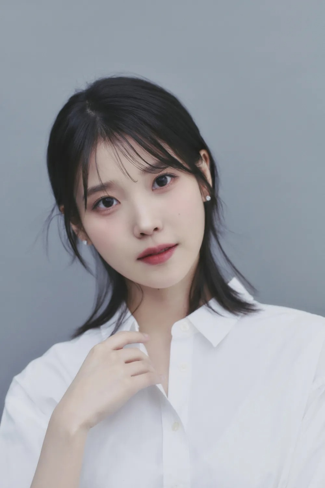

목차
|  | |
| 본명 | 이지은 (李知恩[훈음], Lee Jieun) |
|---|---|
| 출생 | 1993년 5월 16일 (30세) |
| 서울특별시 성동구 송정동[4] | |
| 국적 | 대한민국 |
| 본관 | 전주 이씨 (全州 李氏) |
| 신체 | 162.1cm[5], O형[6], 225mm |
| 가족 | 아버지[7], 어머니[8], 남동생[9][10] |
| 학력 | |
| 종교 | 무종교[11] |
| 소속사 | [12] |
| 유통사 | |
| [13] | |
| 데뷔일 |
2008년 9월 18일[14] (데뷔일로부터 +5452일, 14주년) |
- 1.개요[편집]
-
"아이유는 베스트셀러이자 스테디셀러"
- 김지수 문화전문기자 -2008년, 중학교 3학년이던 15세의 나이에 가수로 데뷔했다. 예명인 '아이유'는 '너와 내가 음악으로 하나가 된다'라는 뜻을 가지고 있다. [53] 매력적인 음색과 뛰어난 작사ㆍ작곡 능력을 바탕으로 아이돌이자 아티스트로서 십수 년째 사랑 받고 있을 뿐 아니라[54] 2012년 이래로 매년 국내 및 아시아의 주요 도시에서 대규모 콘서트를 진행하며 공연자로서도 활발히 활동 중이다. [55]
가수 활동 외에도 각종 예능 프로그램에 출연했으며,[56] 데뷔 이래 80편이 넘는 광고를 진행했을 정도로 다수의 광고 모델로도 활약 중이다. [57] 2011년에 연기자로 데뷔한 후에는 다양한 드라마와 영화에서 연기 활동도 활발하게 펼치고 있다. [58] 연예계에서는 그야말로 올라운더로 인정 받는 만능 엔터테이너이며, 이 때문에 남녀불문 수많은 아이돌들의 롤모델로 꾸준히 꼽히고 있다.
- 2. 인기 및 대중적 영향력[편집]
-
데일리 스포츠한국 선정
한국인이 좋아하는 연예인※ 매년 스포츠한국에서 한국인을 대상으로 실시한 여론 조사를 바탕으로 '한국인이 좋아하는 연예인'을 선정한다.
본 틀에는 5위까지만 기록하며 그보다 낮은 순위는 데일리 스포츠한국 선정 한국인이 좋아하는 연예인 문서에만 기재한다.- 2018년~2020년
-
연도 클릭 시 그 해의 여론 조사 관련 링크로 이동합니다.
2018 2019 2020 - 2021년~2023년
-
연도 클릭 시 그 해의 여론 조사 관련 링크로 이동합니다.
2021 2022 2023
엄청난 대중적 인지도를 가지고 있는 솔로 가수로, 다수의 메가 히트곡을 보유하며 대중음악계에 큰 영향력을 끼치면서 꾸준하게 많은 사랑을 받고 있는 인물이다. 단적으로 데뷔 3년 차였던 2010년부터 발매한 모든 노래들이 각종 음원차트 최상위권에 랭크되었을 만큼 사실상 대중적으로 흥행에 실패한 적이 없다. 10대 시절부터 도전한 다양한 장르의 음악들[59] 중에는 <잔소리>와 <좋은 날>, <너랑 나>처럼 가창력과 소녀스러움을 함께 선보인 곡들이 대중에게 특히 어필되며 국민 여동생이라는 칭호와 함께 대중음악계에 신드롬을 일으켰다. 20대 초반에는 자작곡 <금요일에 만나요>[60]와 세대를 초월하여 폭넓은 리스너층을 확보한 <너의 의미>가 수록된 리메이크 앨범 꽃갈피, 그리고 본격적으로 프로듀싱을 하기 시작한 앨범 CHAT-SHIRE를 기점으로 자신만의 음악을 하는 아티스트로 전향하는 데에 성공했다. 이는 십수 년째 국민적 인기와 영향력을 이어가는 롱런의 기반이 되었다고 평가된다.[61] 그 후 앨범 프로듀싱과 거의 모든 곡의 작사를 자신이 직접 하면서 <레옹>, <밤편지>, <팔레트>, <삐삐>, <Love poem>, <Blueming>, <에잇>, <Celebrity>, <라일락>, <strawberry moon>, <드라마> 등 발매하는 곡들마다 히트곡으로 만들어내며 싱어송라이터로서도 승승장구하고 있다.
또한 매년 벚꽃이 필 때쯤 역주행을 하는 <봄 사랑 벚꽃 말고>와 매년 크리스마스 시즌마다 역주행을 하며 국내 대표 캐럴로 자리잡은 <미리 메리 크리스마스>까지, 매년 때가 되면 사람들이 찾아 듣는 이른바 연금송을 2곡이나 보유하고 있다. 이렇게 트렌드가 급변하는 가요계에서 십수 년 동안 굳건히 최정상의 자리를 지키며 사랑받고 있으며, 이 과정들 속에서 다양한 장르를 소화해내는 역량이 입증되었다는 평가도 받는다.
써클차트(前 가온차트) 집계 이래 대한민국 가수 중 그룹과 솔로를 모두 포함하여 음원 누적 스트리밍 및 다운로드 1위라는 영예를 보유하고 있다. 이러한 성과의 바탕에는 2010년 이후 발매한 음원 중 대중적으로 히트에 실패한 타이틀 곡이 단 한 곡도 없다는 점뿐만 아니라, 앨범의 높은 완성도로 인해 앨범이 발매되면 수록곡 전곡을 들어보는 대중층이 탄탄하기 때문에 수록곡 전체가 차트 최상위권에 랭크되며 사랑받는다는 점이 있다. 심지어 OST나 다른 가수의 곡에 피처링한 곡들도 최상위권에 랭크시키며, 이들 중에는 웬만한 타이틀 곡 수준으로 흥행에 성공한 곡들도 있다.
누적 음원 성적 관리 자료
2010년대 후반에 들어서는 대중성뿐만 아니라 거대 팬덤을 보유한 가수임을 입증하면서 한때 대중성에 비해 팬덤이 약한 것이 흠이라는 지적마저도 옛말로 만들었다. 여자 솔로 가수로서는 보기 드문 거대한 규모의 팬클럽[65]과 한국 여자 가수로서는 역대 최대 규모의 콘서트를 진행했던 점[66]과 2년 연속 KSPO 돔(前 올림픽체조경기장)에 입성하며 단 몇 초만에 전석을 매진시키는 그녀의 콘서트 동원력은 팬덤 규모를 입증하기에 전혀 무리가 없다. [67] 무엇보다 2022년 9월, 그룹과 솔로를 통틀어 한국 여자 가수 최초로 대한민국에서 가장 큰 공연장인 서울올림픽주경기장에 입성하며 대중음악계에 중대한 획을 그었다. [68]
음반 판매량 부문에서도 여성 솔로 가수로서는 특출난 성과를 보이고 있다. 2019년 11월에 발매한 미니 앨범 Love poem이 초동 판매량 147,800장을 기록하며 본인의 이전 최고 기록의 약 6배를 달성한 것은 물론, 역대 여성 솔로 가수 1위 기록을 경신했다. 2021년 3월에 발매한 정규 앨범 LILAC은 274,800장이라는 엄청난 초동 판매량을 기록하며, Love poem의 기록을 2배 가까운 차이로 또 한번 경신했다. 심지어 LILAC은 총 판매량 40만 장을 돌파하는 쾌거를 이루기도 했다. 한편 Love poem 이전까지의 초동 판매량은 대중적 인기에 비해 아쉬웠던 것이 사실이나, 아이유의 경우 여타 아이돌 그룹처럼 초기에 판매량이 몰리는 '초동형 가수'가 아닌 시기를 타지 않고 꾸준히 팔리는 '총판형 가수'였기 때문에 음반의 총 판매량은 항상 높았다.[69] 이렇게 음반 판매량에서도 꾸준한 성과와 끊임없는 성장세를 유지한 결과 2021년 11월 기준 총 1,428,406장의 음반을 판매하며, 최근 10년간 가장 많은 음반 판매량을 기록한 여성 솔로 가수가 되었다.[70]
2010년대 후반에 들어서는 연기 활동에서도 눈에 띄는 성과를 내며 배우로서의 입지를 굳히는 데도 성공했다. 2018년 드라마 《나의 아저씨》에서 보여준 연기로 압도적인 호평을 받으면서 백상예술대상 여자 최우수 연기상 후보에 올랐으며, 2019년 드라마 《호텔 델루나》를 통해 최고의 화제성을 이끌어내며 2019년 tvN 시청률 1위 드라마라는 영예도 얻었다. 또한 20대 여자 배우로서는 최초로 2년 연속 백상예술대상 여자 최우수 연기상 후보에 오르는 쾌거를 이루기도 했다. 이를 증명하듯 2019년 한국갤럽 주관식 설문조사에서는 올해를 빛낸 가수 4위[71]와 올해를 빛낸 아이돌 2위는 물론, 데뷔 이래 처음으로 올해를 빛낸 탤런트에도 7위에 이름을 올리면서 한국갤럽 설문조사가 시작된 2007년 이래 올해를 빛낸 가수와 올해를 빛낸 탤런트에 동시에 이름을 올린 최초의 연예인이자 세 부문에서 동시에 이름을 올린 최초의 연예인이 되었다. # # 이후 영화로도 활동반경을 넓혀 갔는데, 첫 상업영화 진출작인 《브로커》가 세계 3대 영화제 중 하나인 칸 영화제의 경쟁 부문에 초청되면서 데뷔 이후 첫 상업영화로 칸의 레드카펫을 밟게 되는 영광을 안았다.
각종 시상식에서 수상 실적 또한 화려하다. 음원 부문[72]과 앨범 부문[73] 양쪽에서 수많은 수상을 휩쓴 것은 물론이고, 작사ㆍ작곡 부문[74][75], 광고 모델 부문[76], 연기 부문[77] 등에서도 수상 기록을 가지고 있어 만능 엔터테이너 그 자체의 모습을 보이고 있다. 더불어 10대, 20대, 30대에 모두 대상을 수상한 대기록을 보유하고 있기도 하다.
가수와 배우로서의 활동 성과 외에도 한 명의 인간으로서 호감도가 굉장히 높다. 이것은 그녀가 국민적인 인기를 초장기적으로 유지하는 이유가 되고 있다. 여기에는 동안의 외모와 주변인들과의 인연을 통해 엿볼 수 있는 인간미와 관계 유지 능력[78], 깊은 생각이 느껴지는 발언들, 그러면서도 때때로 나타나는 허당미와 귀여움 등이 적지 않은 요소로 작용하고 있다. 무엇보다 데뷔 이후 꾸준한 기부와 선행 활동으로 선한 영향력을 보여주는 면 역시 무시할 수 없는 부분이다. 적재적소에 꼼꼼하게 기부하는 모습과 더불어 그 액수까지 엄청난데, 2023년 5월까지 공식적으로 밝혀진 누적 기부 금액만 무려 50억 원에 달한다.[79] # # 실제로 2019년에는 美 포브스에서 선정한 '아시아 기부 영웅 30인'에 최연소 아시아 기부 영웅으로 이름을 올리기도 했다. #
아이유의 스타성과 영향력은 각종 여론조사에서도 잘 드러나고 있다. 2014년과 2017년엔 한국갤럽에서 실시한 주관식 설문조사에서 올해를 빛낸 가수 1위를 차지했고, 3위 안에 든 횟수는 7번에 달한다. 또한, <좋은 날>과 <너의 의미>는 각각 2011년과 2014년에 올해의 가요 1위를 차지했고, 3위 안에 든 곡은 6곡이나 된다. 게다가 2015년부터 2019년까지 한정하여 실시된 20대 이하 대상 설문 '올해를 빛낸 아이돌' 설문에선 3위 밖을 벗어난 적이 한 해도 없을 정도로 정상급 인기가 지속되고 있음을 실감할 수 있다.[80] 특히 2019년에는 올해를 빛낸 가수와 올해를 빛낸 탤런트, 올해를 빛낸 아이돌에 모두 이름을 올리며,[81] 한국갤럽 조사 이래 올해를 빛낸 가수와 올해를 빛낸 탤런트에 동시에 이름을 올린 최초의 연예인이자 세 분야에 동시에 이름을 올린 최초의 연예인이 되었다. 전연령대를 대상으로 5년 주기로 실시하는 '한국인이 좋아하는 가수' 설문에서도 역시 2014년에 4위를 차지한 것에 이어 2019년에도 역시 4위를 차지하며, 넓은 연령층에서 꾸준한 사랑을 받는 모습에 변함이 없음이 입증되었다.
[한국 갤럽 설문조사 등재 이력]
한국갤럽 이외의 설문에서도 최정상 연예인으로 꼽히고 있다. 2018년부터 가수와 배우, 예능인 등 국내의 모든 연예인을 통틀어 주관식으로 진행하는 데일리 스포츠한국 선정 한국인이 좋아하는 연예인 설문조사에서 2022년까지 유재석 다음으로 높은 2위를 4회 기록했고, 1회(2020)만 3위를 기록했다. 여자 연예인으로서는 5년 연속 1위다.[82] 50개 가요기획사가 참여한 2020년 가요계 파워피플 설문조사에서는 '솔로 가수' 부문에서 압도적으로 1위에 선정되었고, 대표 연예 기획사의 수장들이 포함된 '가요계를 움직이는 파워피플' 부문에서는 현역 가수 중 방탄소년단과 함께 이름을 올렸는데, 여자 가수로서도 솔로 가수로서도 아이유가 유일했다. 2020년 시사저널에서 전문가 1,000명이 선정한 차세대 리더 100인에 포함되었으며, 같은 매체의 누가 한국을 움직이는가? 설문조사의 가장 영향력 있는 방송·연예계 인물 부문에서 2021년에 9위, 2022년에는 전문가 조사 9위, 일반인 조사 6위에 선정되었다.
SNS 상에서도 그녀의 인기를 증명하듯 인스타그램 팔로워 수 3,100만 명 이상, 공식 유튜브 채널 구독자 수 860만 명 이상[83]을 보유하고 있는데, 이는 국내 연예인 중에서 손에 꼽힐 만한 수치다. 또한 해외 인기 및 해외 팬덤의 규모가 좌우하는 뮤직비디오의 조회수 역시 여자 솔로 가수라고는 믿기지 않을 정도로 엄청난 수치를 보여주고 있다.[84] 1억 뷰를 돌파한 뮤직비디오만 8편[85]이며, 그 중 <삐삐>의 뮤직비디오는 2억 뷰를 돌파했다. 특히 중국에서는 아예 한국 여자 연예인 중에서 인기 순위 1위를 수 년째 유지하고 있다. # #[86]
다양한 매체와 전문 블로거들도 그녀와 관련된 수많은 글들을 다루고 있다. 아래 블로그는 그 중 하나로, '아이유 연대기'라는 이름으로 그녀의 활동 초기부터 2022년 콘서트 〈The Golden Hour : 오렌지 태양 아래〉까지 아이유의 노래들과 활동들을 하나 하나 분석하며 상징성과 메시지를 정리한 것이다.
[아이유 연대기 포스팅]
- 3. 연혁[편집]
-
14F 팝파라치
국민여동생 그리고 뮤지션, 배우 이지은 - 3.1. 데뷔 전[편집]
-
김승우의 승승장구 - 아이유 단독 토크쇼 (2011. 12. 13) KBS2 《김승우의 승승장구》에 출연하여 자신의 과거 이야기들을 털어놓은 이후 어린 시절의 일화들이 대중에게 알려지게 되었다.
어릴 적 경제적으로 안정된 집안에서 자랐고, 많은 사람들의 관심과 사랑을 받는 걸 좋아해서 어릴때부터 연예인이 되고 싶어 했으며 연기학원도 다녔다고 한다.[87]
그러나 아이유의 어머니가 보증을 서준 친척이 도망가는 바람에 이후 집안이 어려워졌다. 집에 빨간 딱지가 붙었고 가족은 뿔뿔이 흩어졌다. 이 때문에 부모와 떨어져 할머니 밑에서 자라게 된다. 당시 약 1년 동안 수시로 바퀴벌레가 출몰하는 단칸방에서 살며 감자로 끼니를 때우고, 차비가 없어 큰 언덕을 넘어 등교하는 등 힘든 생활을 했다. #
그 후 사정상 다른 친척집에 신세를 지고 살게 되었으나, 친척의 막말 때문에 마음의 상처를 입었다고 한다. 어느 날 밤, 아이유와 남동생, 할머니가 자고 있던 중에 술을 마시고 들어온 친척이 자고 있는 이들을 향해 "아직도 (자기들 집에) 안 갔어?", "내가 바퀴벌레처럼 해봐?", "연예인은 아무나 하냐", "어린애가 공부는 안 하고 노래 바람이 났다", "쟤가 연예인 되기 전에 내가 백만장자 되겠다"며 험담을 퍼부었기 때문이다. 이때 아이유는 잠든 척하면서 그 험담을 전부 들었고, 반드시 성공하겠다고 마음 먹었다고 한다.
"가난만큼 힘든 건 없는 것 같습니다. '가난은 사랑하는 사람들, 가족끼리도 멀어지게 하는구나'라는 걸 그때 느꼈어요."
그러다 2006년, 중학교 1학년 때 학교에서 체육시간에 수다를 떨다 벌칙으로 반 친구들 앞에서 주현미의 <짝사랑>을 부르게 되었는데, 노래를 들은 체육교사는 아이유에게 체육대회의 개막 무대에 서는 것을 권했다. 결국 체육대회 개막 무대에서 거미의 <친구라도 될 걸 그랬어>를 부른 것을 계기로 본인이 무대 체질이라는 것을 알게 되었다.[88] 이후 가수가 되겠다는 결심을 굳히고 본격적으로 데뷔를 목표로 하게 된다.
"처음부터 가수가 꿈은 아니었어요. 과거 초등학교 시절 체육 선생님께 받은 벌칙으로 반 친구들 앞에 서서 노래를 부르게 된 적이 있었는데, 다들 생각보다 노래를 무척 잘한다고 칭찬을 받았죠. 그 후 학교 축제를 통해 많은 친구들 앞에서 다시 한 번 노래를 불렀는데 조명과 음악 소리, 그리고 친구들의 환호가 마냥 즐겁게 들리는 거예요." - #
가수가 되기 위해 여러 기획사를 돌아다녔지만 기획사 오디션에서 번번이 낙방했다. 무려 20여 차례 오디션 낙방을 겪었다고 한다.[89][90] 당시 아이유가 오디션을 지원한 기획사 중에는 박진영의 JYP엔터테인먼트도 있었다. 정확히는 JYP 1기 전국투어 오디션으로, 2007년 8월경 서울 H144번으로 참가해 버블시스터즈의 노래를 불렀고, 당시 이 오디션이 동영상 사이트인 엠군과 합작했기 때문에 실제 참가 영상도 남아 있다.[91] 영상
후에 박진영이 매우 아까워했지만, 당시 JYP는 아이유가 추구하던 서정적인 발라드나 어쿠스틱보다는 댄스 중심의 아이돌 그룹 발굴에 집중했었기 때문에 기획 의도와 맞지 않았을 수도 있다. # JYP 스타일의 아이유가 궁금하다면, 드라마 《드림 하이》의 OST인
에서 박진영 식 발라드 창법을 비슷하게 들어볼 수 있다. 아이유는 오소녀를 배출한 바 있는 굿 엔터테인먼트에서 잠깐 연습생으로 있다가 2007년 10월, 로엔엔터테인먼트 및 뮤직큐브의 프로듀서인 최갑원의 눈에 들어 오디션에 합격했다. 그런데 오디션을 알아보던 중 사기를 당하기도 했다. 얼마를 줘야 트레이닝과 TV 출연을 시켜준다는 말에 거액을 보냈지만 그 이후 그들로부터 소식이 없었다고 한다. 그 돈은 다름아닌 할머니가 어려운 형편에 악세서리를 팔아 마련한 돈이었기에 마음이 더 아팠다고 한다. #
"저희 집이 진짜 돈이 없었을 때거든요. 그때 할머니가 "아유, 우리 애기 어떡하누..." 하시면서 맛있는 거 사 먹으라고 5만 원을 주셨어요, 울면서."
로엔엔터테인먼트에 들어간 이후에는 음색이 좋고 감각이 뛰어나다는 평을 받으며 하동균, 거미 등의 선배들로부터 전폭적인 지지를 받았다. 정식 데뷔 전 여러 비공식 무대를 거쳐 약 10개월간의 연습 생활 끝에 2008년, 만 15세라는 나이에 정식 데뷔를 하게 되었다. # 한편, 걸그룹으로 데뷔하지 않은 이유는 아이유의 목소리가 튀는 편이라 다른 사람과 조화를 이루기 어렵다는 소속사 측 판단 때문이었다고 한다.
하지만 데뷔 이후에도 형편은 금방 나아지지 않았다. 데뷔 곡 <미아>가 음원 성과를 비롯해 대중적으로 성공하지 못했기 때문이다. 이러한 대중적인 반응을 인지한 듯 소속사는 아이유의 콘셉트를 완전히 바꾸었는데, 2009년에
, <마쉬멜로우>와 같은 밝은 이미지의 아이돌 콘셉트로 전환하면서 점차 인기를 얻기 시작했다. 이렇게 살림이 나아지자 낡은 자동차를 끌고 다니던 아버지에게 약속했던 드림카를 선물했다.[92] 다음 해인 2010년에는 <잔소리>와 <좋은 날> 등 발매하는 곡들마다 연이어 초대박을 기록하면서 가수 인생에 드디어 빛을 보게 된다. - 3.2. 데뷔 후[편집]
-
※ 관련 외부 자료: 아이유 데뷔 10주년 기념 전시회 〈아이유 갤러리〉[93] 중 연혁 서술 내용 #
- 3.2.1. 2008년~2009년[편집]
-
<미아> 시절 인터뷰 사진 Growing Up 자켓 사진 2008년 9월 18일, 하이브리드 팝[94] 장르의 <미아>로 Mnet 《엠 카운트다운》에서 데뷔했다. 첫 데뷔 무대의 현실은 참혹했는데, 박수는커녕 관객들의 차가운 시선과 타 아이돌 악성 팬덤의 야유와 욕설을 참아 가며 노래를 불러야 했다.[95] 게다가 낮은 인지도 탓에 곡명(미아)과 예명(아이유)이 바뀐 제목의 기사가 올라오기도 했다.
<미아>가 수록된 데뷔 음반 Lost And Found는 9월 23일에 발매되었다. 지금보다는 감성적인 표현이 부족한 편이었지만 중학생이라는 나이에 비해서 가창력이 뛰어났고 곡의 음악성도 높은 편으로[96], 적어도 리스너들 사이에서는 "만만찮은 신인이 나타났다"는 인상을 주었다. 하지만 대중들로부터 큰 반응을 얻지는 못했고, 노래의 흥행 역시 실패했다. 다만 그와 별개로 유희열, 유영석 등 유명 작곡가들의 기대를 불러모았고, 한국문화콘텐츠진흥원에서 '11월의 우수 신인음반'에 선정되기도 했다. #
2009년 4월, 데뷔 앨범의 대중적 실패를 의식한 듯 정규 1집 Growing Up의 타이틀 곡
는 발랄한 이미지의 댄스 곡으로 이미지 변신을 하여 인지도를 높여 갔다. 데뷔 후 두 번째로 발매한 음원이었는데도 불구하고, 2009년 멜론 연간차트 66위를 기록했는데, 당시 거의 무명가수나 다름없었던 것을 감안하면 상당히 선방한 성적이다. 의 음악방송 활동 이후에는 치어리더 콘셉트의 <있잖아 (Rock Ver.)>[97]을 깜찍한 안무와 함께 무대에서 선보이며 상큼하고 발랄한 소녀 이미지를 확실하게 잡아갔다. 2009년 6월에는 《2009 외인구단》의 OST <그러는 그대는>, 9월에는 《선덕여왕》의 OST <아라로>와 <바람꽃>에 참여했다. 다만, 인지도가 막 생기기 시작한 상태였고 당시의 깜찍한 이미지와 잘 맞지 않아서인지 대중에겐 잘 알려지지 않았다. 이것보다는 오히려 MBC GAME의 스타크래프트 라디오 방송 《IU의 STAR 4U》에서 7~8월 동안 MC를 맡아 게임 매니아들을 공략한 것이 인지도 상승에 더 큰 도움이 됐다.[98]
2009년 11월에는 미니 2집 IU...IM을 발매했는데, 역시 통통 튀는 발랄한 댄스 곡인 <마쉬멜로우>로 활동했다. 뮤직비디오에 등장하는 거대 마쉬멜로우 인형[99]을 음악방송에도 선보여 화제가 되기도 했다. 이로 인해 인기가 더욱 상승했고, 당시 언론에서는 아이유에게 소녀 디바라는 수식어를 붙여주기도 했다. 아이돌 전문가들이 주목하고 있다는 이야기를 많이 했었고, 아이유를 이상형으로 꼽는 연예인들도 나오기 시작했다.
《IU의 STAR 4U》에 이어 2009년 8월 28일부터 6개월간 《곰TV 뮤직차트쇼》를 진행하였다. 브레이크 없는 웃음으로 패러디가 되기도 했으며,[100] 특히 <마쉬멜로우>의 화제성과 맞물려 인기가 높아졌고, 젊은 남성층 위주의 초기 팬덤이 굳혀졌다.[101] 각종 음악방송에서 유명한 노래들[102]을 어쿠스틱 버전으로 부른 것 또한 대중적 인지도를 쌓는 데에 큰 역할을 했다.
이러한 활동들을 통해 당시 아이돌 그룹이 지배하던 시장에서 솔로 아이돌 가수로서 자리잡아 가게 된 것은 의미 있는 성과였지만, 아직 이 때까지는 '국민 스타' 레벨의 유명세와는 한참 거리가 있었다. 한편, 아이유의 인기가 가장 폭발적이었던 곳은 다름 아닌 군대였다. 당시 군대에서 아이유는 이미 메이저급의 아이돌로, 흔히 말하는 군통령 중 한 명이었다.
- 3.2.2. 2010년~2011년[편집]
-
<좋은 날> 뮤직비디오 <너랑 나> 인기가요 무대 2010년 1월과 2월에는 각각 <첫사랑이죠>[103]와 <다섯째 손가락>이라는 프로젝트 음악을 선보였다. 5월에는 데뷔 후 최초로 콘서트를 열었는데, V.O.S의 최현준, 성진환과 함께한 합동 콘서트였다.
이어서 2010년 6월에는 임슬옹과 함께 부른 듀엣 곡 <잔소리>로 데뷔 이후 첫 음악방송 1위를 차지하며 제대로 주목 받기 시작했다. 이 곡은 음악 자체로도 엄청난 인기를 끌어서 2010년 멜론 연간차트 2위에 오르는 기염을 토했는데, 이후로도 각종 예능에서 남녀 듀엣 곡을 부를 때면 빠지지 않는 곡이 되었다.
7월에는 MBC 드라마 《로드 넘버 원》의 OST <여자라서>를 통해 애절한 보컬 능력을 선보였고, 8월에는 유승호와 <사랑을 믿어요> 듀엣을 발표했는데 당시 '국민 여동생과 국민 남동생의 만남'이라는 수식어가 붙기도 했다. 9월에는 성시경과 듀엣 곡 <그대네요>를 발표하여 큰 화제를 모았으며 가온 주간 디지털 차트에서 1위를 달성하기도 했다.
2010년 7월부터 2011년 4월까지 SBS 《영웅호걸》에 출연하며 첫 고정 예능 출연을 하게 되었고, 《영웅호걸》 당시에는 <좋은 날>로 초대박을 치기 전이었는데도 불구하고, 첫 회부터 꾸준히 인기투표 상위권에 랭크되는 등[104] 당시 그녀의 인기와 인지도를 알 수 있다. 사실 이 시점부터 <잔소리>와 영웅호걸로 연타를 친 아이유를 향해서 "뭐 하나만 제대로 터지면 국민 스타 되겠다"는 분위기가 돌고 있었다. # 2010년 11월 한 달 동안은 KBS2 《유희열의 스케치북》에서 '루시드폴의 사연을 만지다'라는 코너에 고정으로 출연했다.
그리고 2010년 12월, 그것을 현실로 만든 미니 3집 Real이 세상에 공개되었다. 타이틀 곡 <좋은 날>은 2010년대를 대표하는 곡 중 하나라고 할 만한 메가 히트곡이 되었다. 발매된 지 하루 만에 모든 음원차트에서 1위를 차지했고, SBS 《인기가요》에서 뮤티즌송, KBS2 《뮤직뱅크》 K차트 1위, Mnet 《엠 카운트다운》에서도 1위를 차지하면서 데뷔 이래 최초로 단독 앨범으로 1위를 달성했다. 또한 문근영을 잇는 국민 여동생이라는 수식어가 따라다니면서 독보적인 입지를 굳혀 갔다.[105] <좋은 날>의 클라이맥스인 3단 고음 열풍은 아이유의 이름을 가요계에 각인시켜놓는 데에 충분했다. '3단'이 들어간 단어에는 죄다 <좋은 날>이 언급될 정도로 온갖 패러디가 쏟아져나오기도 했다. 이 곡으로 제3회 멜론 뮤직 어워드에서 올해의 베스트송, 제9회 한국대중음악상에서 올해의 노래를 수상하며 2개의 대상을 거머쥐었다. 또한 2011년 한국갤럽의 주관식 설문조사 결과 <좋은 날>이 올해의 가요 1위[106]를 차지하기도 했다.[107] 훗날 빌보드는 이 곡을 2010년대 최고의 K-Pop 1위로 선정했다.
뿐만 아니라 Real 앨범의 수록곡 전곡을 6주 이상 차트인시켰다는 것도 매우 놀라운 성과였다.[108] 히트곡을 가진 유명한 걸그룹조차도 일간 차트에서 전 수록곡을 차트인 시키지는 못 하는데, 당시 아무리 대세 가수였다 하더라도 신인 가수였던 아이유가 일간 차트는 물론, 한 달이 넘도록 수록곡 전곡을 차트인 시킨 것이다. 특히 <이게 아닌데>는 당시 멜론 주간 차트에 무려 15주나 차트인 했다. 스트리밍 시대가 도래하기 전, 다운로드 위주로 음원 차트가 이용되어 차트 변동이 훨씬 심하던 당시 차트에서 수록곡이 15주나 차트인 했다는 것은 엄청난 일이다.[109] "믿고 듣는 아이유"라는 이미지는 사실 이때부터 시작이었다고 봐도 과언이 아니다. 다른 수록곡인 <미리 메리 크리스마스>는 매년 크리스마스 시즌마다 재차트인 하며 한국의 대표 캐럴 중 하나로 자리잡았다. 이후부터는 아이유가 음원을 내는 족족 차트 싹쓸이를 하게 된다. 한 마디로 레전드의 시작이었다.
2011년 1~2월에는 KBS2 드라마 《드림 하이》에 출연하여 데뷔 이후 최초의 연기 활동을 펼쳤다. 시청률로 보나 화제성으로 보나 첫 연기 도전을 성공적으로 마무리했으며, 박진영이 작사 및 작곡한 OST인
역시 흥행에 성공했다. 당시 는 2011년 2월 멜론 월간 차트 1위를 기록했는데, 2010년 12월부터 2011년 1월까지 <좋은 날>이 멜론 월간 차트 1위를 기록했기 때문에 무려 3달 연속 아이유가 월간 1위를 차지한 것이다. 또한 연초부터 KBS, MBC, SBS 등 지상파 방송에서 각종 인터뷰와 토크쇼에[110] 출연했고, 《무한도전》과 《런닝맨》 등 메이저 예능에도 게스트 출연하며 아이유의 연혁을 통틀어 방송 활동을 가장 활발히 한 2011년이 되었다. 뿐만 아니라, 초창기 라디오 진행 경험이 바탕이 된 덕에 SBS 《인기가요》의 MC로 발탁되어 2011년 3월부터 13개월 동안 MC를 맡았다. 최장수 인기가요 여자 MC라는 타이틀을 십 년 넘게 지난 지금까지도 보유하고 있다.[111]
이렇게 바쁜 와중에 음반 활동 역시 계속되었다. 2011년 2월에 발매한 싱글 1집 Real+의 타이틀 곡 <나만 몰랐던 이야기>로 또 한번 발매와 동시에 모든 음원차트에서 1위를 차지했다. 그 전의 아이유 모습과는 다른 어두운 콘셉트였기 때문에 호불호가 갈렸음에도 준수한 성적을 보여주었고, 다양한 이미지를 소화해내는 가수임을 각인시킨 곡이었다. 5월에는 드라마 《최고의 사랑》의 OST이자 공식 첫 자작곡인 <내 손을 잡아>를 발매했다. 당시 드라마의 인기와 아이유의 인기, 곡의 퀄리티 3박자가 맞아떨어지며 흥행에도 성공했다. 한편, 이 노래는 발매된 지 약 10년 후 콘서트 영상 공개에 힘입어 역주행에 성공하고 다시 한번 주목받게 되었다. 자세한 내용은 해당 문서 참고.
여름에는 KBS2 《불후의 명곡》과 SBS 《김연아의 키스 앤 크라이》에 출연했다. 《불후의 명곡》의 경우 당초 일회성으로 출연할 계획이었는데, 방송사의 일방적인 언론 플레이로 인해 아이유의 이미지가 훼손되는 사건이 있었다. 또한 《키스 앤 크라이》 역시 원래 출연 계획이 없었음에도 출연 요청에 응했으나 썩 좋지 못 한 스케이팅 실력을 보여줌으로써 예능 출연에 무리수를 뒀다는 비판을 받기도 했다. 하지만 김연아와 함께 부른 키스 앤 크라이의 테마곡 <얼음꽃>은 당시 호평을 받아 실(失)만 있었던 것은 아니었다. <얼음꽃>은 2011년 멜론 연간 차트 78위에 오르는 등 방송 테마곡으로서는 이례적으로 좋은 성적을 거두었다.
2011년 11월, 정규 2집 Last Fantasy를 발매하였다. 타이틀 곡 <너랑 나>는 아이유의 역대 곡을 통틀어 가장 판타지틱한 곡이며, 멜론 주간 차트에서 6주 연속 1위, 아이차트 퍼펙트 올킬(PAK) 74회, KBS2 《뮤직뱅크》에서 6주 연속 1위를 차지하는 등 아이유의 단일곡 역사상 가장 압도적인 성과를 거두었다.[112] 이를 통해 국민 여동생으로서의 건재함을 이어갔으며, 소녀 콘셉트의 정점이었다고 할 수 있다. 각종 음원차트에서 수록곡 13곡을 나란히 줄 세우기 하는 모습을 보였고, 쟁쟁한 작곡가들이 참여한 앨범의 수록곡들 역시 호평을 받았다.[113] 또한, 한국갤럽에서 실시한 주관식 설문조사에서 2011년 올해를 빛낸 가수 5위[114]에 이름을 올렸다.
12월에는 일본에서 정식 데뷔를 하기 전 미니 앨범을 발표함으로써 해외 활동에도 첫 발을 떼었다. <잔소리>와 <좋은 날>, <나만 몰랐던 이야기> 등 기존 히트곡들을 일본판으로 발표했다.
<잔소리> 이후 발매한 모든 노래들이 히트를 치고 <좋은 날>에서 홈런을 터뜨린 데에 이어 드라마까지 주목 받자, 광고 모델 출연 제의들이 쇄도했다. 2011년 당시 18건의 광고 계약을 따내며 CF 퀸이라는 별명까지 얻었을 정도이다. 광고 모델 관련 수상도 다수 가져갔다.[115]
후크송과 퍼포먼스 위주로 아이돌 그룹이 장악하고 있던 2000년대 후반~2010년대 초반의 가요계에서 여동생 같은 친근한 이미지에 가창력을 최고의 무기로 하는 솔로 가수 아이유는 가요계의 군계일학이 될 수 있었다. 경쟁적으로 섹시 콘셉트를 밀며 청소년과 20대 위주로 어필을 하던 당대 가요계의 분위기 속에서 귀엽고 청순한 이미지로 통기타를 치며 라이브를 하는 모습은 세대를 초월하는 음악적 어필을 가능케 했다고 분석된다. #1 #2
한편 아이유가 아이돌 노선을 벗어나 뮤지션으로 정착한 이후에 나온 대부분의 히트곡들이 별다른 활동을 하지 않고도 롱런한 사례가 많다 보니[116], 2020년대에 이르러서는 '오랫동안 정상에서 활동하는 가수'라는 이미지가 박혀 의외로 국민 여동생 시절의 임팩트가 과소평가 당하기도 한다. 그러나 이 때의 신드롬은 9시 지상파 뉴스에 등장할 정도였다는 것으로 말을 줄이겠다.[117] 절대 국민 여동생 시절 임팩트가 약하지 않았다. 바꿔 말하면, 그 당시 국민 여동생의 임팩트가 약해 보일 정도로 10년이 훌쩍 지난 지금까지도 인기와 위상이 높아지고 있다는 뜻이기도 하다.
- 3.2.3. 2012년~2014년[편집]
-
<하루 끝> 뮤직비디오 
Modern Times Epilogue 자켓 사진 꽃갈피 자켓 사진 2012년 2월, 동덕여자고등학교를 졸업했는데 당시 가수 생활에 매진하기 위해 대학교 진학을 포기했다. 이후 KBS2 《김승우의 승승장구》와 SBS 《힐링캠프》에서 공부를 못했기 때문에 대학교 진학을 못한 것이라고 언급했다. 다수의 대학교로부터 특례입학 제안을 받았지만, "대학은 노력한 이들이 들어가는 것이다. 대학생활을 제대로 할 수 없는 나는 입학하지 않겠다"라는 개념 발언을 남기면서 엄청난 화제를 모았다. 당시에는 다수의 연예인들이 특례 입학을 통해 대학교 진학을 했는데, 제대로 학교생활을 하지 않아 대중들로부터 많은 비판을 받기도 했었다.
2012년 5월에 발매한 싱글 2집 스무 살의 봄의 선공개 곡 <복숭아>와 타이틀 곡 <하루 끝> 역시 발매와 동시에 각종 음원차트에서 1위를 차지했다. <하루 끝>은 이전 히트곡들과 달리 별다른 방송 활동이 없었는 데도 불구하고, 그 해 멜론 연간 차트에서 11위를 기록했을 만큼 큰 인기를 끌었다.
같은 해 여름, 아이유는 최초로 전국 투어 단독 콘서트 〈Real Fantasy〉[118]를 개최하고 국내 6개 도시를 투어하며 활발한 공연 활동을 펼치기 시작했다. 예매 30분 만에 전석이 매진되는 등 반응 또한 뜨거웠다. 이 때를 시작으로 매년 한 해도 빠짐없이 전국 단위 투어로 단독 콘서트를 진행하고 있다.[119] 콘서트가 끝나고[120] 나서는, LOEN TREE에서 발매한 썸머 프로젝트 앨범의 타이틀곡 <달빛바다>를 발표했다. 같은 소속사 신인 걸그룹 피에스타를 홍보하는 차원에서 이루어진 콜라보 활동이었다.
2012년 연말은 스캔들로 인해 데뷔 이래 최대 위기를 겪은 시기였다. 이후 예능 출연을 대폭 줄이고, 다량의 자작곡을 포함한 음반 발매와 드라마 출연에 매진하며 가수와 배우의 본업에 충실한 생활을 하게 된다.[121]
2013년에도 활발한 활동을 계속 이어가며 이미지를 극복해 나갔다. 우선 3월부터 8월까지 50부작에 걸친 KBS2 주말 드라마 《최고다 이순신》에서 열연을 펼쳤다. KBS2 주말 드라마에 전업 배우가 아닌 아이돌 출신 가수가 주연으로 캐스팅되었다는 점이 대중들의 우려를 사기도 했으나, 극 초반의 연기가 약간 흔들렸던 것을 제외하면 전반적으로 준수한 연기력으로 그런 우려를 불식시키는 데에 성공했다. 같은 해 11월에는 KBS2 수목 드라마 《예쁜 남자》에도 출연했는데, 아쉽게도 시청률이 저조하여 별 존재감 없이 끝나고 말았다.
2013년 10월, 정규 3집 Modern Times를 발매했다. 타이틀 곡인 <분홍신>으로 각종 음원차트 1위와 음악방송 1위를 휩쓸었고 역시나 수록곡 전곡을 줄 세웠다. 모던 재즈 위주로 구성된 수록곡들도 완성도 높다는 호평을 받았다. 기존에 시도해 본 적 없는 스윙, 재즈, 라틴 장르의 곡들을 소화해 내며 음악성을 키우고 성숙한 모습을 어필함으로써 이미지 변신에 성공했다는 평을 받는다. 빌보드에서는 2010년대 최고의 K-POP 음반 2위로 Modern Times를 선정했다.
이어 12월에 발매한 정규 3집 리패키지 앨범 Modern Times Epilogue의 타이틀 곡이자 자작곡 <금요일에 만나요>가 대히트를 치면서 싱어송라이터로의 전향을 매우 성공적으로 이루어냈다. 이 곡은 아이유의 대표적인 롱런 곡으로도 유명한데, 멜론 주간 차트에서 무려 96주간 차트인을 하여 당시 멜론 역사상 최장 기간 롱런 곡이었다.[122][123] 100주를 못 넘기고 96주 차트인으로 끝나게 된 것도 바로 자신의 앨범 CHAT-SHIRE의 줄세우기로 인한 팀킬 때문이었다는 점은 덤. 아무튼 2014년 멜론 연간 차트 4위, 2015년 멜론 연간 차트 44위를 기록하는 등 엄청난 성과를 거두었다.
한국갤럽에서 실시한 주관식 설문조사에서 2012년 올해를 빛낸 가수 4위[124], 2013년 올해를 빛낸 가수 6위[125]를 차지하며 가요계에서 입지를 확실히 굳혀 갔다. 또한 2013년 올해의 가요 5위에 <분홍신>[126]으로도 이름을 올렸다.
2012년 3월, <좋은 날>의 일본판 싱글 Good Day로 일본에 정식 데뷔한 이후 2013년까지 일본 앨범을 꾸준히 발매하고 쇼케이스 및 공연도 하며 일본에서 인지도를 쌓아 나갔다. 하지만 2014년 이후로는 활동국을 중화권 및 동남아권으로 전향했고, 일본 활동은 중단하였다.[127]
2014년에는 자신의 생일인 5월 16일에 맞춰 발매한 첫 리메이크 앨범 꽃갈피가 발매와 동시에 호평과 찬사를 받으며, 아이유라는 가수의 이름값과 뛰어난 음악적 재능을 다시 한번 확인시켜 주었다. 타이틀 곡인 조덕배 원곡의 <나의 옛날이야기>도 2014년 멜론 연간 30위로 준수한 성과를 거두었지만, 가장 인기 있었던 건 산울림 원곡의 <너의 의미>였다. 특히 <너의 의미>는 산울림의 보컬 김창완이 직접 피처링에 참여하여, 과거 산울림의 노래를 듣던 중년 세대에게도 큰 인기를 끌었다. 또한 멜론 주간 차트에 73주간 차트인을 하며 <금요일에 만나요>에 이어 또 한번 엄청나게 롱런을 했고, 2014년 멜론 연간 차트 8위, 2015년 연간차트 58위를 기록하며 큰 성공을 거두었다. 이렇게 꽃갈피는 팬덤 연령층을 넓히는 데 크게 기여한 앨범으로 평가받는다.[128] 꽃갈피 발매 직후에는 아이유 콘서트 사상 유일한 소극장 콘서트를 진행했다. 참고로 콘서트 시기가 세월호 사건 한 달 후였는데, 아이유는 콘서트 수익금 전액을 세월호 유가족에게 전달했다.
그 외에도 2014년에는 다양한 콜라보 활동을 이어갔는데, 특히 직접 작사 및 프로듀싱에 참여한 HIGH4와의 듀엣 곡 <봄 사랑 벚꽃 말고>가 엄청난 사랑을 받았다. 2014년 멜론 연간 차트 6위, 2015년 연간 차트 91위에 오르기도 했으며, 이후 매년 봄마다 역주행을 하며 음원차트에 진입하고 있어 버스커 버스커의 <벚꽃 엔딩>과 같이 봄 연금 곡으로 불린다. 울랄라세션과 듀엣을 한 <애타는 마음> 역시 좋은 반응을 얻었고 그해 멜론 연간 차트 43위를 기록했다.
10월에는 무려 서태지와 콜라보레이션을 한 <소격동>이 공개와 동시에 많은 관심을 받았고, 역시 각종 음원차트 1위 및 음악방송 1위를 차지하며 큰 사랑을 받아 전 세대가 사랑하는 뮤지션의 입지를 확고히 굳혔다. 서태지와의 콜라보는 서태지가 자신의 9집 앨범을 구상하면서 2개의 노래와 2개의 뮤직비디오를 통해 2가지의 비밀 이야기를 퍼즐처럼 풀어나가는 새로운 형식의 콜라보레이션 프로젝트를 기획했고, 아이유를 상대 가수로 정하여 이루어지게 되었다.[129]
이러한 점들을 인정 받아 제6회 멜론 뮤직 어워드에서 대상 중 하나인 올해의 아티스트를 수상했다. 2005년 멜론 뮤직 어워드가 생긴 이래 여성 솔로 가수가 올해의 아티스트를 수상한 첫 사례였다. 그리고 한국갤럽에서 실시한 주관식 설문조사 결과 2014년 올해를 빛낸 가수 1위[130]와 2014년 올해의 가요 1위에 <너의 의미>[131], 4위에 <소격동>[132]으로 이름을 올렸다.
2013년부터 2014년까지는 아이유의 확장된 음악성과 뮤지션으로서의 지위를 대중에게 본격적으로 인정 받은 시기라고 할 수 있다. 6개월 내에 <금요일에 만나요>부터 <봄 사랑 벚꽃 말고>, <너의 의미>까지 무려 3곡의 메가 히트곡이 탄생하며, 2014년 멜론 연간 차트에서 나란히 4위, 6위, 8위에 올랐고[133] 3곡 모두 2015년 연간 차트에서도 차트인 하며 2년 연속 연간 차트에 진입했다. 스트리밍 시대가 본격적으로 도래하기 전, 한 곡이 연간차트에 연속으로 진입하는 것은 매우 드문 일이었는데 아이유의 세 곡이 나란히 연년 진입한 것이다.
성적 외적인 면에서도, 이 히트곡들은 판타지 중심이었던 이전 히트곡들과 달리 매우 현실적인 주제를 바탕으로 편안하면서도 호소력 있는 음악으로 대중을 사로잡았다는 점에서 그 의미가 매우 컸다. <금요일에 만나요>는 아이유의 자작곡, <봄 사랑 벚꽃 말고> 역시 아이유가 작사한 곡이자 봄 연금송이 된 곡이고, <너의 의미>는 대선배이자 레전드 가수 김창완과 호흡을 맞춘 곡이었다. 때문에 이 곡들의 메가 히트를 기점으로 아이돌에서 한 발짝 벗어난 뮤지션 아이유의 시대가 열렸음을 대중들에게 확실히 각인시켰고, 아이유는 삼촌팬이 주류였던[134] 아이돌 시절에 비해 성별과 세대를 가리지 않고 더욱 다양한 팬층을 품으며 그야말로 국민가수가 되었다.[135]